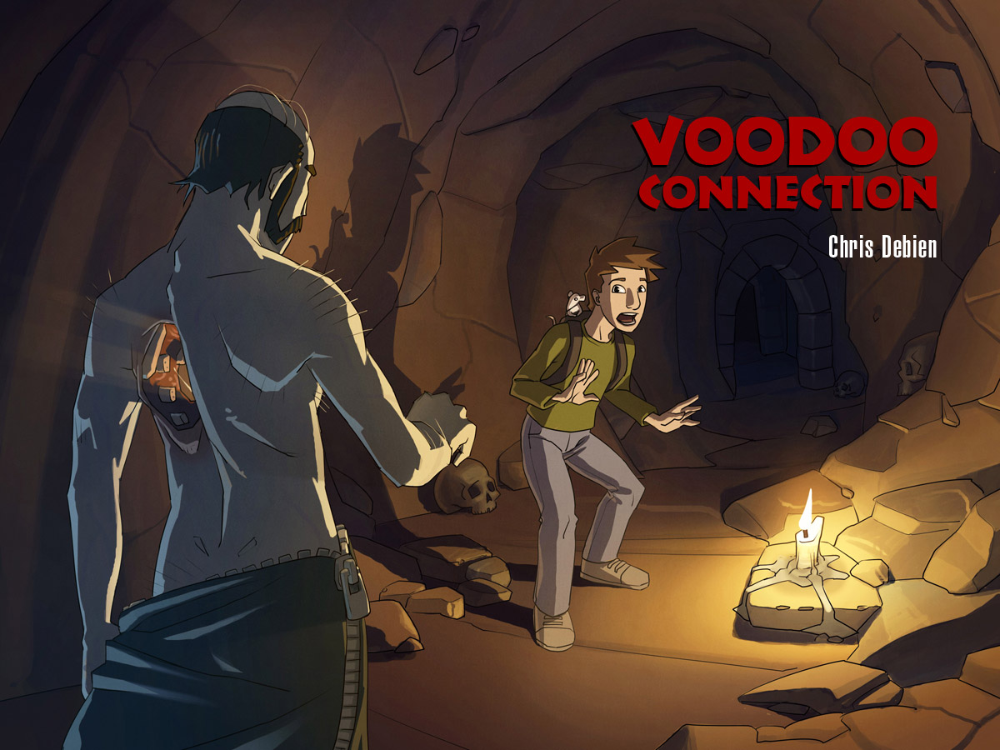
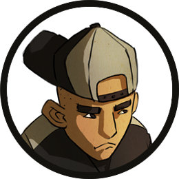
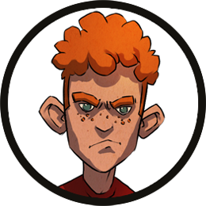
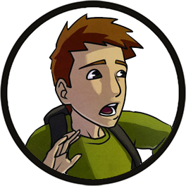
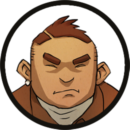

Téléchargement des ressources...
Téléchargement des ressources...

Ils étaient là.
À moins de cent mètres derrière Simon. Bien décidés à lui faire payer l’affront qu’ils avaient subi.
La Meute.
Quatre adolescents qui faisaient régner leur loi au sein du foyer.
Recroquevillé dans la pénombre d’un porche, Simon contemplait le ballet des lampes torches qui déchiraient la nuit. Des yeux, scrutant le moindre recoin, repoussant les ténèbres de leurs lueurs cyclopes.
Bientôt, ils seraient sur lui.
Simon frissonna en songeant à ce qui allait lui arriver. Il savait que Kevin, leur chef, serait sans pitié…
Il fallait qu’il leur échappe.
Absolument. Et tant pis s’il ne pouvait jamais retourner au foyer.
Les pas se rapprochaient, de plus en plus. Il pouvait entendre leurs voix à présent.
Trouvez-moi ce sale petit rat ! Il va comprendre qu’on ne peut pas se moquer de nous comme ça !
Ouaip, on va lui faire sa fête !
Ça, c’était « La Fouine ».
Dix sept ans, un mètre quatre-vingt, soixante-quinze kilos de violence pure. Une véritable bombe ambulante qui ne demandait qu’à exploser.
Simon se pencha un instant hors de son abri pour évaluer ses chances de leur échapper.
Proches du zéro absolu s’il ne bougeait pas de sa cachette. Un peu plus s’il tentait une sortie. À condition de tomber sur quelqu’un, un adulte qui saurait éloigner ses poursuivants.
Tu es prêt ? chuchota-t-il à Dark.
Dark. Vador. Son rat albinos. Son plus fidèle compagnon depuis un an.
Le seul en vérité.
Simon repoussa l’élan de mélancolie qui menaçait de le submerger et enfouit Dark au fond de son sac.
Il passa les lanières autour de ses épaules et s’élança.
Pas de réaction.
Il s’était mis à courir comme si sa vie en dépendait.

Si la Meute lui tombait dessus, il était bon pour un passage à tabac dans les règles de l’art. Voilà ce qui se passe lorsque l’on refuse de se soumettre aux plus forts.
Simon évitait de regarder dans leur direction, les yeux rivés sur les frondaisons du parc Montsouris.
Des arbres, de la pénombre et des milliards de recoins où il pourrait se dissimuler en attendant l’aube.
S’il atteignait le jardin, il serait sauvé.
Mais, dans sa précipitation, il buta contre le trottoir. Le béton lui arracha une plainte. Un cri minuscule.
 Il est là !
Il est là !
Pas assez minuscule, visiblement.
Simon détala tandis que les faisceaux accrochaient sa silhouette.
Chopez-le ! Faut qu’il comprenne !
Que je comprenne quoi ? Qu’il faut se laisser faire ? Pas question !
Il accéléra.
Il essayait d’oublier que ses poumons le brûlaient, qu’il était épuisé par cette poursuite qui durait depuis des heures, et surtout que la peur menaçait de le paralyser à tout instant.
Il traversa le boulevard, déclenchant le klaxon furieux d’un noctambule égaré.
Puis il s’engouffra à l’abri des arbres. Son sac ballotait sur ses épaules et il pensa au pauvre Dark.
Sans réfléchir, il pénétra dans une petite allée. Il dépassa les angles du pavillon météo qui s’élevait dans la pénombre, puis il ralentit sa course.
Pas un bruit.
Rien d’autre que le vent dans les feuilles.
Où étaient-ils passés ?
Simon s’arrêta, s’accroupit derrière un banc scarifié de graffitis.
Là ! Sur sa gauche.

Il avait reconnu la démarche chaloupée de la Fouine, les pas lourds de l’Ours – seize ans, un QI inversement proportionnel à sa force - à ses côtés.
Les deux autres suivaient la ligne de tramway qui longeait le parc, sur sa droite.
Le groupe s’était séparé en deux et tentait de l’encercler.
Simon réfléchit à toute allure.
Le RER !
La station ne devait être qu’à quelques dizaines de mètres devant lui et, même en ces heures tardives, il y aurait sans doute un peu de monde.
Il reprit sa progression, lentement, veillant à rester invisible.
Plus que cinquante mètres.
Il entendait déjà le crissement des rames sur les rails.
Quarante
Là sur le pont ! Il essaye de rejoindre la gare !
Merde ! lâcha Simon en reprenant sa course.
Trente.
Mais la Meute, galvanisée par la proximité de sa proie, se rapprochait rapidement.
Ils avaient de la lumière, ils évitaient les obstacles. Surtout ils étaient plus âgés, plus forts.
Simon était éreinté, les jambes écorchées par les ronces, au bord de l’asphyxie.
Les deux groupes gagnaient insensiblement du terrain. Bientôt ils se rejoindraient et ce serait l’hallali.
Simon obliqua brutalement vers le nord pour essayer de rejoindre un bouquet d’arbres denses. Avec un peu de chance, il pourrait les semer. Au pire, il grimperait sur l’un des troncs centenaires.
Il se précipita dans le bosquet . Les branches basses fouettèrent son visage, lui arrachant des larmes. Mais il était presqu’à l’abri : l’obscurité était totale.
Il ignorait vers quoi il courrait mais il s’en fichait. Il accéléra encore et…
S’effondra brutalement, le souffle coupé, une violente douleur barrant sa poitrine. Il venait de heurter quelque chose de plein fouet.
Abasourdi, Simon fouilla l’obscurité. Il entendait ses poursuivants battre les talus et les fourrés.
Il tâtonna un instant dans son sac.
Sa torche.
Un faible halo de lumière.
Un grillage.
Il se redressa en grimaçant. S’approcha. Une dizaine de mètres en contrebas, le faisceau de sa lampe illumina les reliefs mangés de rouille d’une ligne de chemin de fer abandonnée.
La Petite Ceinture.
Un éclat de voix derrière lui le fit sursauter.
On le tient !
Simon fixa le puits de ténèbres qui s’étendait au-delà du grillage.
Alors, t’es enfin prêt à recevoir ta leçon ?
Kevin s’approcha dans la clarté de la lune.
Il tendit le bras. Un bruit de ressort. Une lame apparut au bout de sa main.
Simon sentait le sang battre contre ses tempes, l’adrénaline inonder son corps. Il voulait gagner du temps pour récupérer. Pour tenter quelque chose.
Il se retourna face à ses adversaires.
Je n’ai fait que défendre Rachel. Vous n’aviez pas le droit de vous en prendre à elle.
T’avais qu’à pas te mêler de nos affaires.
Quatre contre un, vous n’êtes que des lâches !
Simon avait lancé ça tout en jetant un bref coup d’œil autour de lui. Il avait aperçu la grosse pierre au pied du grillage. Un bon tremplin…
Kevin fulminait.
Amenez-le moi !.
Les trois autres s’élancèrent. Mais, juste avant que leurs mains ne se referment sur lui, il s’était jeté sur le côté. D’une roulade il avait atteint la pierre. Il se redressa d’un bond, prit appui sur le rocher et entreprit l’escalade du grillage.
Il va s’échapper ! Faites quelque chose !
Mais… Il ne peut pas aller loin, il n’y a rien après.
C’était vrai.
Il n’y avait plus rien. Rien d’autre qu’un énorme trou de ténèbres.
Mais il était trop tard pour reculer.
Simon s’élança dans le vide.
A SUIVRE...